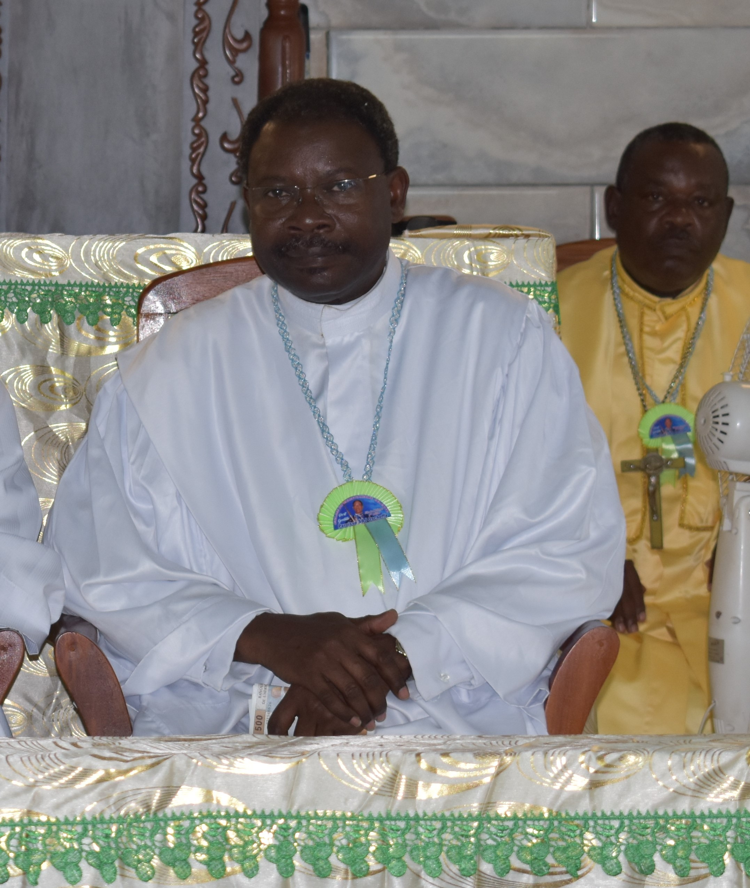

|  |
|
Le Suprême Seigneur évangéliste Paul HOUELEKOU est né le 14 juillet Il devint plus tard après ses études supérieures Professeur de français et vint au Gabon où il exerça sa profession. Il est aujourd'hui responsable et chargé de la paroisse SBJ OSCHOFFA de Port-Gentil |